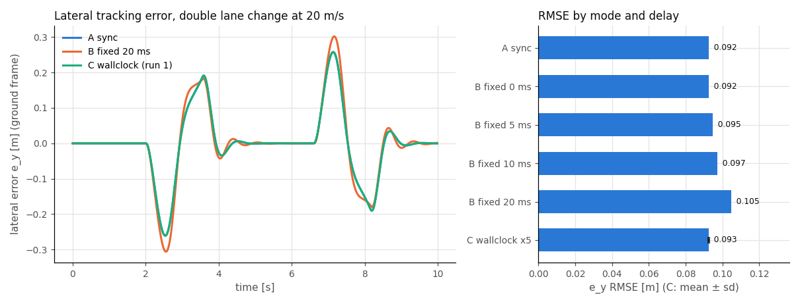

Closed-loop evaluation modes¶
python/vdsim_closedloop.py runs one controller callback against a
VDSimPlant under three timing models, so the cost of controller computation
delay and loop jitter can be measured with everything else held equal. The
controller does not change between modes; only the mode string does.
from vdsim_closedloop import ClosedLoopEval, LatencyModel
def controller(obs, t): # obs: VDSimPlant observation dict at time t
return delta_rad, fx_total_n
ev = ClosedLoopEval(
plant_kwargs=dict(level="L2", substep_dt=5e-4),
controller=controller,
control_period=0.02, # Tc [s], a whole multiple of substep_dt
mode="virtual_async", # "sync" | "virtual_async" | "wallclock"
latency=LatencyModel.fixed(0.010),
overrun="skip", # "skip" | "queue"
duration=10.0,
trace_path="runs/b10.vdtrace", # optional .vdtrace
reference_path=path_xy, # optional (M, 2) polyline -> e_y stats
)
res = ev.run() # res.trace, res.samples, res.stats, res.meta
Which mode to use¶
| Mode | Clock | Delay in the loop | Reproducible | Use it for |
|---|---|---|---|---|
A sync |
virtual, one thread | none: command applied at its sample time | bit for bit | the reference result; identical to a VDSimPlant.step loop |
B virtual_async |
virtual, one thread | c_k from a LatencyModel, inserted in virtual time |
bit for bit for fixed and seeded distributions |
sweeping a delay budget; regression tests of delay sensitivity |
C wallclock |
wall clock, C++ sim thread + Python control thread | whatever the host really took, OS jitter included | statistically only | checking that a controller keeps up in real time on a given host |
A sync¶
At t_k = k*Tc the observation is sampled, the controller is called and its
command is applied at once and held for one period (zero-order hold). The
result is bit-identical to the documented VDSimPlant loop.
B virtual_async¶
The sample at t_k produces a command that takes effect at
The previous command stays in force until then; the plant keeps integrating
substep by substep. One worker computes one sample at a time: sample k
starts at max(t_k, finish of k-1).
When a computation runs past the next grid point (c_k > Tc) the run is in
overrun and the overrun policy decides:
skip: samples that fall due while the worker is busy are not taken; the next sample is the first grid point at or after the finish.queue: every grid sample is taken at its own time and computed in order, so the delay accumulates whilec_k > Tc.
Both count overruns in stats["n_overrun"]; skip also counts
stats["n_skipped"].
Latency models:
| Model | c_k |
Reproducible |
|---|---|---|
LatencyModel.fixed(c) |
c every sample |
yes |
LatencyModel.uniform(lo, hi, seed) |
U[lo, hi] from a generator seeded per run |
yes, per seed |
LatencyModel.normal(mu, sd, seed) |
max(0, N(mu, sd^2)), clipped at zero because a computation cannot finish before it starts |
yes, per seed |
LatencyModel.measured() |
wall time of the controller call (time.perf_counter) |
no |
fixed(0) reproduces mode A bit for bit for both policies.
C wallclock¶
A C++ vdsim.RealTimeRunner ticks the session every substep_dt of wall
clock with Python's global interpreter lock (GIL) released. A Python thread wakes every Tc, snapshots the
session, calls the controller and latches its command through the same
Fx -> wheel torque mapping that VDSimPlant uses. The controller may block
or spin; the sim keeps advancing (the delay is real, not modelled).
stats reports the control period p50/p99/max (median, 99th percentile, maximum), the wake jitter, the
sample-to-apply delay, overruns, skipped slots and the real-time factor
rtf = elapsed virtual time / elapsed wall time (closer to 1 is better).
ev.stop() ends a run early from any thread; every exit path (normal end,
controller exception, stop(), KeyboardInterrupt) joins both threads
before run() returns.
Options that exist only in this mode:
cpu_affinity={"sim": 2, "ctrl": [3]}pins the sim thread to one core and the control thread to a core set. Linux only (sched_setaffinity); on other platforms the request is ignored andstats["sim_affinity_applied"]/stats["ctrl_affinity_applied"]say so. The default (None) inherits the process affinity, sotasksetaround the process decides.watchdog={"timeout_s": 0.1, "failsafe_u": (0.0, -2000.0)}latches a fail-safe command whenever no command arrived fortimeout_s; latches are counted instats["failsafe_latches"].
What each mode does not promise¶
- A and B do not measure your controller's speed; B uses the delay you give it
(or, with
measured(), a single host's timing without OS scheduling). - C is not reproducible. Two runs differ; compare distributions, not runs.
- C jitter depends on the host load and the OS scheduler. VDSim does not provide real-time kernel guarantees. The numbers below are what one shared Linux host gave, not a bound.
- Core pinning is Linux-only (see above).
- A queued sample in C is the state when the control thread gets to it, not the state at its slot: a real-time loop cannot read the past.
Results and trace¶
res.trace: arrays per control sample (t, pose and velocities,u_steer/u_fx= command in force at that instant;u_axin place ofu_fxwithlongitudinal="accel"). A and B are on the gridt_k = k*Tcplus a closing row atdurationwithout a command; C has one row per wall-clock sample (irregulart).res.samples: one row per controller sample actually taken:k,t_sample,t_apply,c_k,overrun,applied, the command, and the measured compute timet_compute_s.res.meta:eval_mode,control_period_s,latency_model,overrun_policy,delta_sw_ratio, level and (C) affinity and watchdog; the provenance of Using VDSim from another repository;longitudinal/accel_conversion(Acceleration command);ref_pointandtracking_point(Reference point).trace_path=writes a.vdtrace(schema 0.5) with one row per control sample. A writes exactly whatVDSimPlant.enable_tracewrites. B and C add four channels that describe the command in force on that row:
| Channel | Unit | Meaning |
|---|---|---|
t_sample |
s | virtual time at which that command's observation was sampled |
t_apply |
s | virtual time at which it took effect |
c_k |
s | its computation delay (B: the latency model; C: measured) |
overrun |
- | 1 when its computation ran past one control period |
The rows before the first computed command carry NaN times and
overrun = 0. The manifest records eval_mode, control_period_s,
latency_model and overrun_policy in every mode. The four channels are
optional and additive, so the schema stays 0.5 and an existing 0.5 reader
ignores them.
Ending a run early¶
ev.stop() ends a run in every mode. Call it from the controller or from any
other thread; run() then returns what ran so far.
| Mode | Where the run ends | The command of the stopping call |
|---|---|---|
A sync |
a stop() made while a controller call runs: at that sample's time t_k; a stop() made between calls: at the next grid time, before that sample is taken |
not applied; the plant is not advanced |
B virtual_async |
as in A, at the virtual time of the call. A queue sample computed late behind a busy worker is called at the substep the worker frees up, so the run ends there (the plant cannot go back to t_k) |
not applied; every command still waiting for its t_apply is dropped too |
C wallclock |
the control thread stops at its next slot and the sim thread is joined; the run ends wherever the session clock got to | unchanged from before |
stats["stopped_early"](bool) andstats["t_stop"](simulated end time [s],Nonewhen the run went the full duration) are present in every mode.meta["duration_s"]stays the nominal duration; the run's real length ist_stop.- Dropped commands are counted in
stats["n_unapplied"]withapplied = 0inres.samples; they never appear as at_applyin the trace. res.traceends with a closing row att_stop(no command), and the tracking metrics ofreference_pathuse only the samples that ran.- A recorded trace is finalized normally: its last row is
t_stop(when that row falls on the decimation grid; atTc >= 10 msit always does) and the manifest carriesstopped_earlyandt_stop. A run that is not stopped recordsstopped_early: false, t_stop: null. stop()beforerun()has no effect: every run starts cleared.
Realized steer¶
The observation carries the steer the dynamics actually integrated, after the
actuator chain (dead time, lag, rate limit) of actuator=:
| Key | Unit | Meaning |
|---|---|---|
delta_rw |
rad | realized road-wheel steer over the last substep before the sample. With actuator=None it equals the command in force, bit for bit |
delta_sw |
rad | delta_rw x steering_ratio, only when the vehicle file states steering_ratio; no default ratio stands in for it. The ratio used is meta["delta_sw_ratio"] (None = not observed) |
res.trace has a delta_rw column. trace_channels=("steer_applied",) adds
the same quantity to the .vdtrace as an optional channel (rad); it is off by
default so the default trace is unchanged, and a 0.5 reader that predates it
ignores it. Per-wheel steer angles are not observed: the direct-control
plant applies one road-wheel angle.
Yaw acceleration r_dot is not provided: the dynamics' derivative cannot be
read out without a core interface change, and a finite difference of r is
not offered in its place.
Reference point¶
ref_point= (a VDSimPlant argument, so it also goes in plant_kwargs) adds
the motion of one body point to every observation. X, Y stay at the CG.
| Value | Point (body frame, ISO 8855: x forward, y left) |
|---|---|
None (default) |
nothing added |
"cg" |
[0, 0] |
"rear_axle" |
[-cg_to_rear, 0] |
"front_axle" |
[cg_to_front, 0] |
[x_fwd, y_left] |
that offset [m] |
| Key | Unit | Meaning |
|---|---|---|
X_ref, Y_ref |
m | ground position of the point |
vx_ref, vy_ref |
m/s | its velocity in the body frame, v_P = v_CG + r x p: vx - r*y_left, vy + r*x_fwd |
meta["ref_point"] and the trace manifest record the setting, the offset
used and cg_to_front_m / cg_to_rear_m. The tracking error of
reference_path is still measured at the CG (meta["tracking_point"] = "cg").
Acceleration command¶
With longitudinal="accel" the second command element is a longitudinal
acceleration target [m/s^2] instead of a force [N]:
ev = ClosedLoopEval(dict(config="generic_sedan.yaml", longitudinal="accel"),
controller, # returns (delta_rad, ax_mps2)
control_period=0.02)
- One converter: the session's L5 cascade,
LongAxController(PI plus feed-forward on the measuredax), the class and gains the RLaccelaction uses. Its pedal output becomes wheel torque linearly:throttle x drive_torque_refandbrake x brake_torque_ref, split with the vehicle's front share. Non-positive references fall back tomax_motor_torque x final_drive_ratioandmax_brake_torque. - No resistance or mass feed-forward is added; the integrator absorbs the steady drag and rolling resistance. The target is not clamped; full pedal is the ceiling.
- Not the RL
accelresponse: the RL environment's pedals drive the vehicle's powertrain map, while here they scale the linear torque references above. meta["accel_conversion"](and the trace manifest) records the converter, its gains, both references and these choices. Inforcemode it isNoneand the manifest has neither key.- The target is recorded as
u_ax[m/s^2] inres.trace,res.samplesand the trace file;u_fxis absent from all three inaccelmode, so a reader that takesu_fxas a force [N] never sees an acceleration. A schema 0.5 reader that predatesu_axopens such a trace and ignores the channel. - L1 is refused: the bicycle model reports
ax = 0, so the feedback has nothing to track.
Using VDSim from another repository¶
Pin a commit, build the bindings and install the Python layer in editable mode:
git clone https://github.com/Onlyti/VDSim.git && cd VDSim
git checkout <sha>
pip install -e . # builds the bindings (scikit-build-core)
python -c "import vdsim; print(vdsim.__version__, vdsim.__git_sha__, vdsim.__git_dirty__)"
The build bakes the source HEAD into the module: vdsim.__git_sha__ (40 hex
digits, "unknown" without git at build time) and vdsim.__git_dirty__
(True when tracked files differed from HEAD, None when unknown). Every
result carries it, so a stored result says what it ran on:
res = ev.run()
assert res.meta["vdsim_git_sha"] == "<sha>"
res.meta["vdsim_version"], res.meta["param_hash"], res.meta["vehicle_config"]
res.meta["level"], res.meta["actuator"] # None, {"preset": id} or {"param_hash": ...}
The same functions fill the trace repro block. Tagged releases and PyPI
packages are not published for this yet; pin by SHA.
Example: delay budget of a lane-change controller¶
examples/closed_loop_eval_demo.py runs a Stanley-type lateral controller
with a speed loop on a double lane change (3.5 m over 30 m, 20 m/s, L2,
Tc = 20 ms, substep_dt = 0.5 ms) as A, B with fixed delays of 0, 5, 10 and
20 ms, and C five times.
Metric: e_y = signed distance [m] from the CG to the closest point of the
reference polyline, along its normal, ground frame
(vdsim_closedloop.lateral_error); RMSE over every control sample (lower is
better). C is the mean ± standard deviation of five runs.

| case | e_y RMSE [m] | max abs e_y [m] | samples | overruns |
|---|---|---|---|---|
| A sync | 0.0924 | 0.2609 | 500 | 0 |
| B fixed 0 ms | 0.0924 | 0.2609 | 500 | 0 |
| B fixed 5 ms | 0.0946 | 0.2710 | 500 | 0 |
| B fixed 10 ms | 0.0972 | 0.2818 | 500 | 0 |
| B fixed 20 ms | 0.1048 | 0.3059 | 500 | 0 |
| C wallclock x5 | 0.0927 ± 0.0003 | 0.2634 | 500 (mean) | 0 (total) |
Mode C ran with load1 = 16.7 on cores 0-9,12-23 (inherited); its sample-to-apply delay p50 was 0.1 ms and its period p99 at most 28.6 ms.
B shows how the same controller loses tracking as its computation delay grows (B 0 ms equals A exactly). C stays close to A because this controller computes in well under a millisecond, so its real sample-to-apply delay is a fraction of a substep.
Wall-clock jitter measured on a shared host¶
One Linux host (24 logical cores, cores 10 and 11 excluded with taskset),
L2, Tc = 20 ms, substep_dt = 0.5 ms, 10 s runs, cheap controller.
load1 is the one-minute load average read just before the run. Control
period = time between consecutive wakes of the control thread; overrun =
latch later than one period after its slot.
| Condition | load1 | Cores | Runs | Period p50 [ms] | Period p99 [ms] | Period max [ms] | Overruns per run (of 500) | RTF |
|---|---|---|---|---|---|---|---|---|
| low load | 2.86–3.90 | inherited 0-9,12-23 | 5 | 20.00 | 20.05–20.07 | 20.06–20.12 | 0/0/0/0/0 | 0.99999 |
| shared-host load | ~17 | inherited 0-9,12-23 | 5 | 20.00 | 22.67–28.68 | 29.41–34.80 | 0/0/0/0/0 | 0.99947–0.99999 |
| shared-host load | ~17 | pinned: sim core 2, control core 3 | 5 | 20.00 | 25.55–33.49 | 30.79–45.28 | 2/4/0/3/0 | 0.99999 |
| shared-host load | ~17 | pinned: sim core 15, control core 13 | 3 | 20.00 | 20.44–30.01 | 30.26–40.09 | 1/0/0 | 0.99879–0.99999 |
All runs on 2026-10-13 with examples/closedloop_wallclock_bench.py and the
S6 test; RTF is given to five decimals.
Under heavy load the period p99 spreads to roughly 20-34 ms while the RTF
stays near 1; at low load it stays within about 0.1 ms of Tc.
Limits observed under load¶
The wall-clock pass lines (S6 RTF band, S7 "sim keeps ticking while the
controller blocks") are registered as the ctest closedloop_wallclock_timing
with the label timing. The validation preset and the CI build jobs exclude
that label because a shared CI runner's load is not under our control; the
verdicts are measured locally at low load instead.
S7 asserts that at least 96 of the nominal 120 sim ticks (0.8 x 120) happen
while the controller blocks for 3*Tc. Observed failure rates:
| Condition | load1 | Runs | Runs below 96 ticks | Fewest ticks |
|---|---|---|---|---|
| low load, 4 variants (sleep / GIL-holding spin x skip / queue) x 20 | 3.13–3.97 | 80 | 0 | 120 |
| shared-host load, standalone | 13.8–18.7 | 80 | 0 | 104 |
| shared-host load, right after a 10 s S6 run | 16.3–20.6 | 40 | 1 | 86 |
| shared-host load, inside a full ctest run | ~18–20 | 2 suite runs | 2 | 82 |
On a heavily loaded host expect occasional misses of the tick floor; measure mode C on a quiet machine or treat its numbers as host-specific.
Each wallclock result carries flags to filter on:
stats["load1_start"]: 1-minute load average just before the run (Linux;Noneelsewhere).stats["rtf_windows"]: RTF per 1 s of wall clock,p01/p50/p99/minand the window countn(Noneunder two windows).stats["quality"] = {"ok": bool, "reasons": [...], "warnings": [...]}with fixed rules:"rtf_band"when|rtf - 1| > 0.02,"sim_max_lag"whensim_max_lag_s > Tc,"sim_ticks_short"when a run that was not stopped took fewer substeps than planned.okanswers "can the measuring environment (the sim thread) be trusted";warningsanswers "did the controller miss its period". The only warning is"control_overrun"(n_overrun > 0); it never changesok, because a slow controller is the result being measured, not a broken environment.
runs = [ev.run() for _ in range(5)]
kept = [r for r in runs if r.stats["quality"]["ok"]] # trusted runs
on_time = [r for r in kept
if "control_overrun" not in r.stats["quality"]["warnings"]]
Contention on the controller side adds delay too: an inference library whose thread count is not fixed can compete with the sim thread for cores.